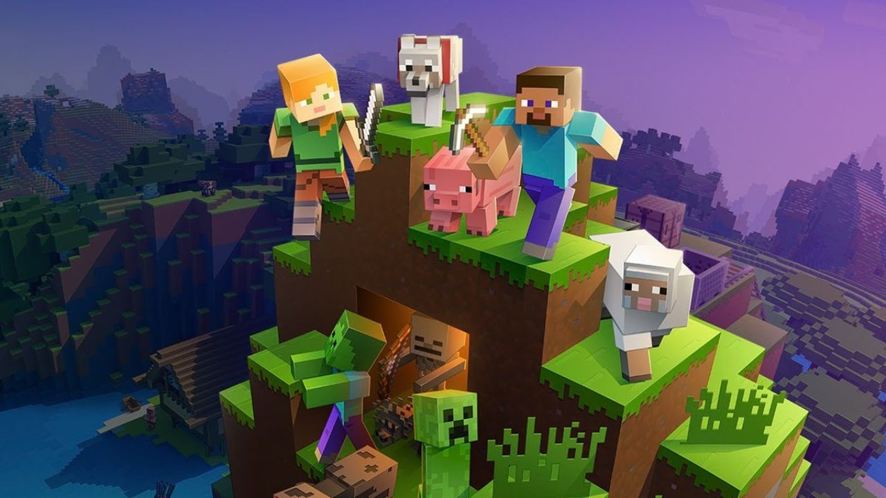
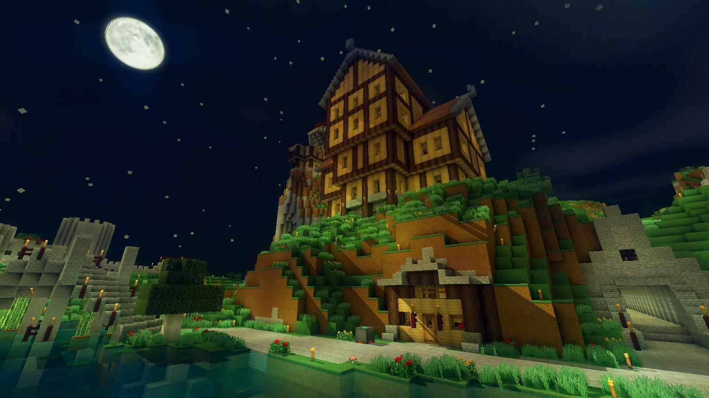
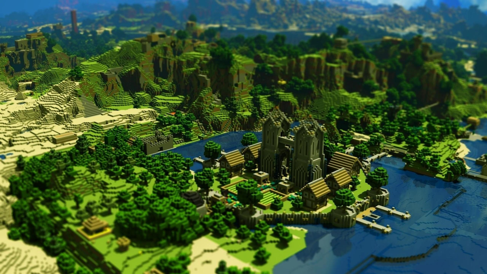

Minecraft
  
Minecraft — это приключенческая игра-песочница, у которой нет сюжета и ограничений в пространстве. Её пользователи создают объекты и даже целые миры из виртуальных 3D-блоков по принципу LEGO. В игре игроки исследуют процедурно сгенерированный трёхмерный мир с практически бесконечной местностью. Они могут находить и добывать сырьё, создавать инструменты и предметы, а также строить сооружения, земляные работы и машины. В зависимости от выбранного режима игры игроки могут сражаться с враждебными мобами, а также сотрудничать с другими игроками или соревноваться с ними в мультиплеере. По состоянию на 2024 год Minecraft — самая продаваемая видеоигра всех времён, с более чем 300 миллионами проданных копий и почти 170 миллионами активных игроков ежемесячно.